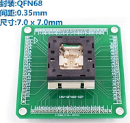

烧录内置 SPI NOR
对于内置 NOR 烧录方案，尤其是针对支持合封 NOR Flash 的芯片，设备生产厂商可能希望在主控芯片焊接到板子前对于合封 NOR 进行镜像数据烧录。这种离线烧录方法可以确保芯片在出厂前已经包含了必要的固件或应用程序。
内置 NOR 烧录原理
-
对没有烧录过启动程序的空片，芯片上电时，由于 BROM 启动失败，直接进入了升级模式。
-
在升级模式中，BROM 会设置将合封 NOR 的 CS、CLK、MOSI 和 MISO 引脚映射到外部。
-
此时外部设备可将芯片当做一颗普通 SPI NOR Flash 进行读写访问。
准备硬件
- 使用合适的烧录座
为了进行芯片的离线烧录，特别是在内置 NOR 闪存的情况下，使用一个合适的烧录座是至关重要的一步。下面将详细介绍如何选择合适的烧录座以及如何使用它来准备芯片进行烧录。
烧录座的选择主要依赖于芯片的封装类型和尺寸。芯片可能有多种封装，如 QFN68, QFN88, QFN100，注意根据芯片的封装信息，使用合适的烧录座。
例如，对于 QFN68 封装的芯片，其具体尺寸信息为 7x7x0.85 mm，引脚间距为 0.35 mm ，应准备一个能够匹配这些规格的烧录座。
图 1. 烧录座示例 确保烧录座可以精确地容纳并引出芯片的所有必要信号线。将芯片对准烧录座，轻轻下压，确保所有引脚都与烧录座的触点良好接触。检查连接是否牢固且无短路风险。
- 使用烧录座烧录子板一旦选择了合适的烧录座，即可将芯片放置到烧录座中，并确保所有接触点都正确无误地连接，具体流程如下：
-
设计烧录子板。
要使用外部烧录器进行烧录，还需要针对烧录器设计一个专用的烧录子板，通过该子板将烧录器、烧录座以及主控芯片对应的信号连接起来。
对于主控芯片而言，需要处理的相关引脚信息如下：表 1. 引脚
功能
VCC33_IO
3.3V 供电
GND
接地
PB6
FLASH_CS
PB7
FLASH_MISO
PB8
FLASH_MOSI
PB9
FLASH_CLK
PLL_XI
外部晶振
PLL_XO
外部晶振
注：-
所有的 VCC33_IO 都要接上电源。
-
有些芯片不需要外部晶振，则可以不需要理会 PLL_XI/PLL_XO 引脚
-
-
将主控芯片的升级引脚默认拉低，可以反复使用烧录器烧录芯片：
引脚
功能
PA0
默认的升级按键引脚
设置升级引脚拉低的作用，是因为默认情况下，如果 NOR 中有合法的启动程序， 上电时会直接启动，不会进入升级模式。若需要进入升级模式，则通过拉低升级按键对应的引脚，启动时软件检测后进入。
注意，升级按键引脚默认是 PA0，但是软件可配置修改为其它引脚。如果要烧录的软件已经修改了所检测的升级按键引脚， 则烧录子板也需对应修改，不然无法支持重复烧录，即空片第一次烧录可成功，再次烧录无法检测到 NOR Flash。
-
连接烧录器：烧录器的相关连接信息，请参考所使用的烧录器手册。
-